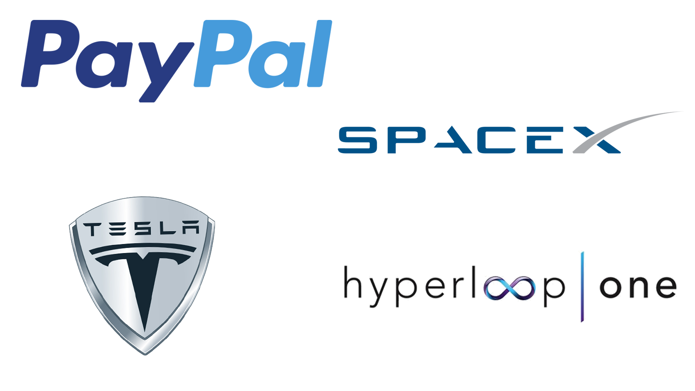
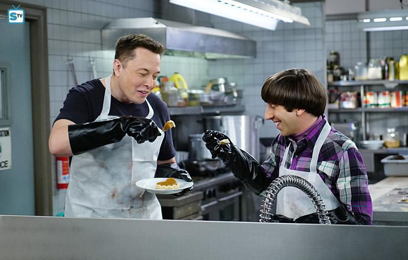
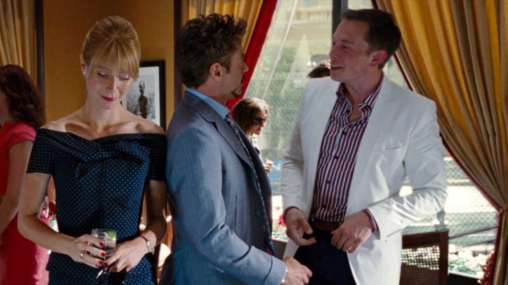
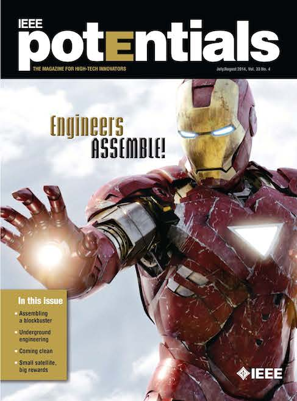
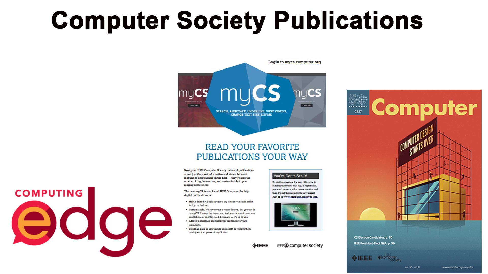
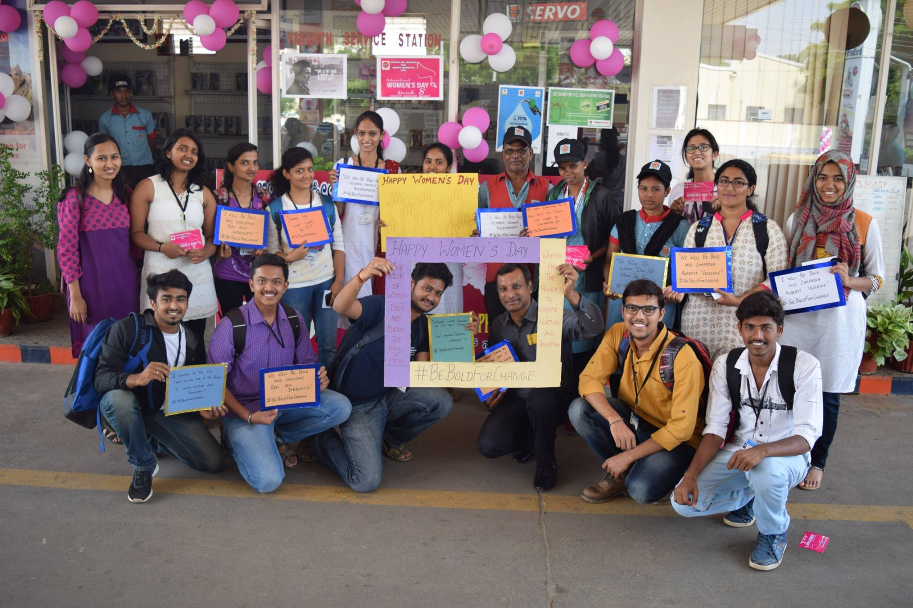

1963
4,20,000 Members
160 Countries
1999
430+ Members

What do you get from NISB?
Benefits of Computer Society

3000+ Online Courses
28,000+ EBooks
Scholarships
- Richard E.Merwin Scholarship
- Lance Stafford Larson Paper Contest
- Upsilon Pi Epsilon Honor Society
Benefits of NISB-CS
Weekly Meetups
University Relations
Project Drive

